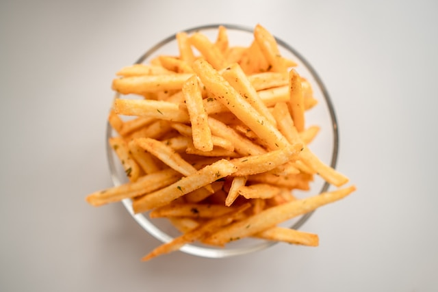
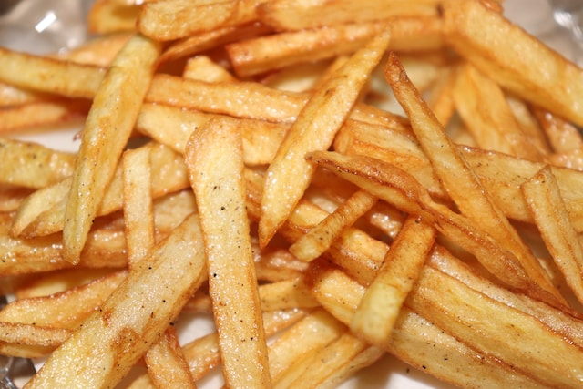
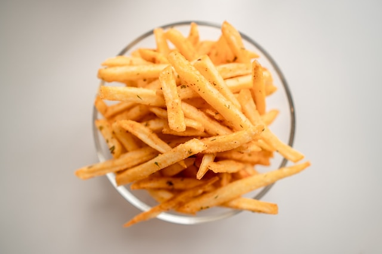
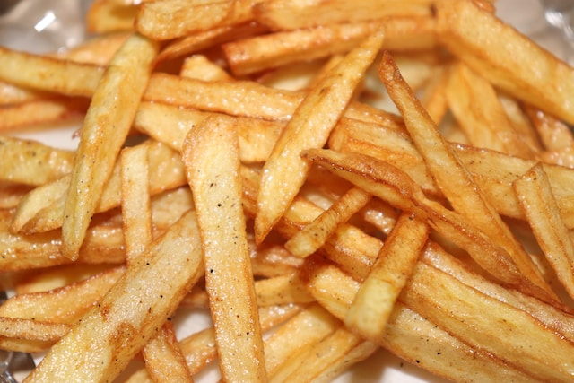
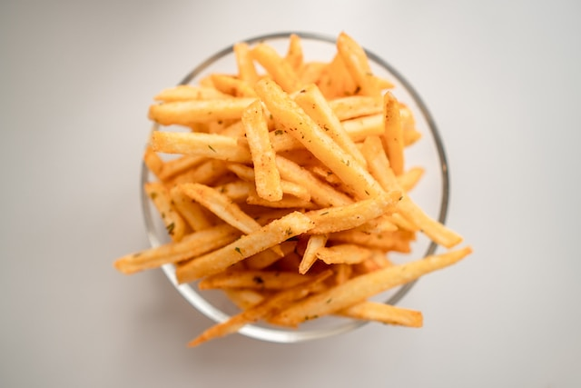
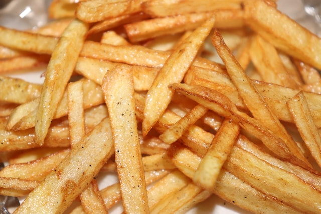
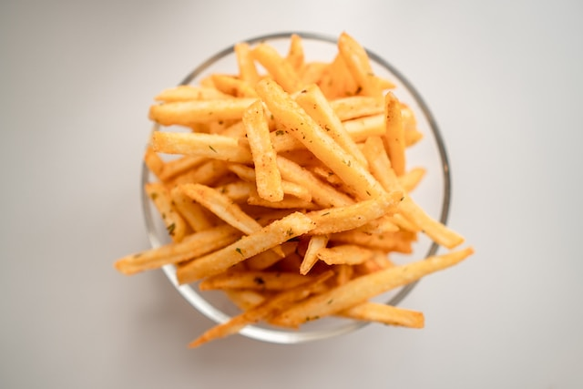
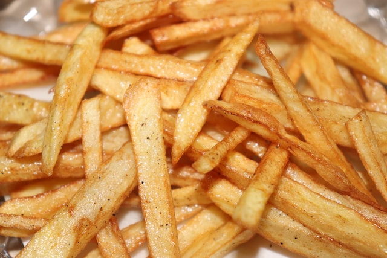
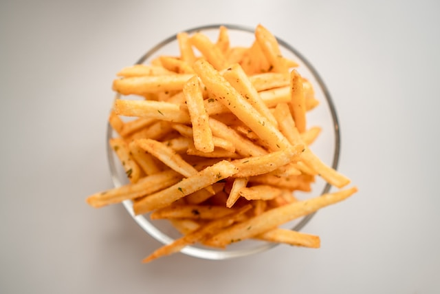
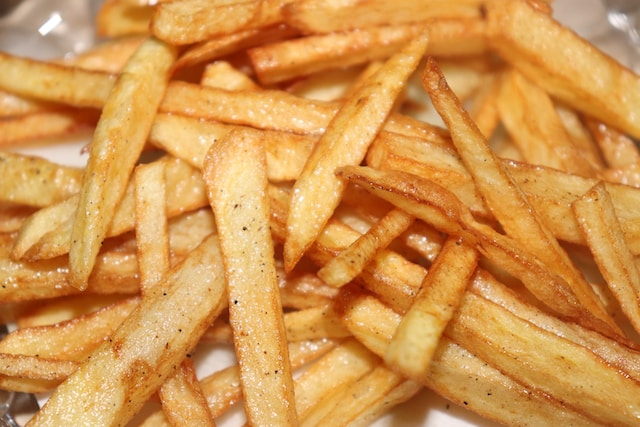

Crispy French Fries
 
Description
Make the crispsiest french fries ever. Better than restaurant ones!
Ingredients Needed:
potatoes
salt
oil
Steps:
wash and peel potaotes
cut them in long rectangular strips
soak in cold water for an hour
drain and pat dry the potatoes using a clean kitchen towl
fry in high flame until golden and crispy
remove from oil and sprinkle salt, enjoy!
All Recipes
 






